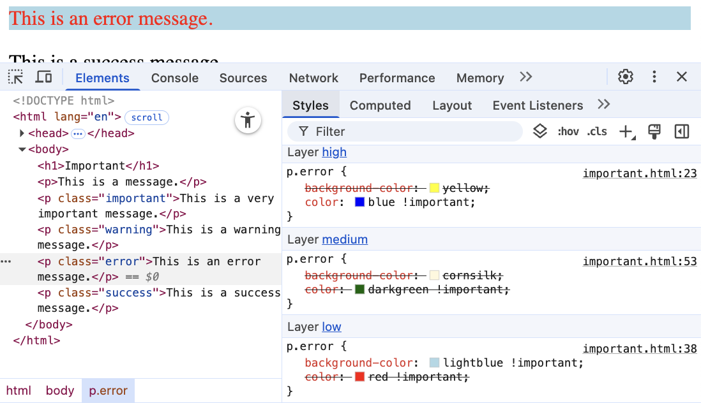
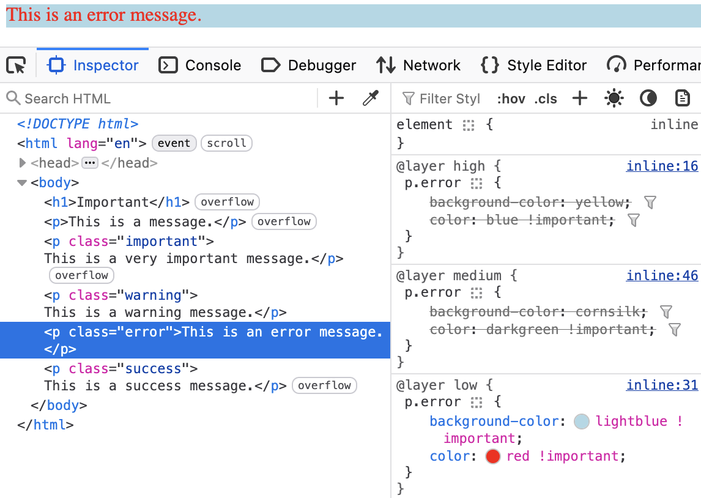
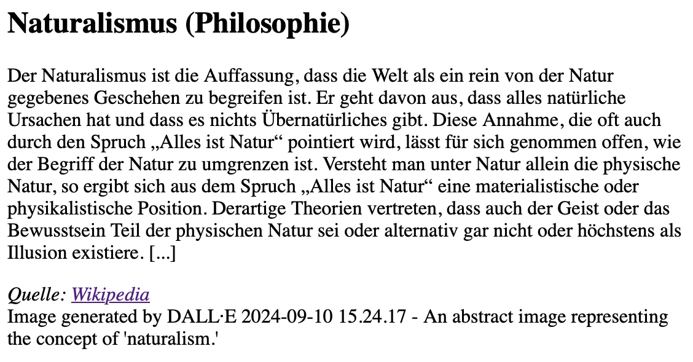
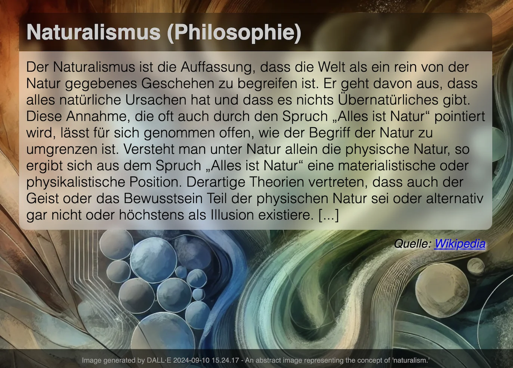

Bei der Erstellung der Unterlagen wurden KI Assistenten (insbesondere Claude aber ggf. auch ChatGPT, Ollama mit Gemma/LLama/Qwen oder OpenCode mit Kimi/Qwen/Deepseek...) unterstützend eingesetzt. Dies erfolgte insbesondere zur Unterstützung bei der Generierung von Grafiken (d. h. SVG Dateien), oder um sich Übersichtstabellen generieren zu lassen. Weiterhin wurde KI zur allgemeinen Qualitätssicherung eingesetzt. Inhalte, die ggf. von der KI vorgeschlagen wurden, wurden im Falle der Übernahme explizit validiert und angepasst.
CSS (Cascading Style Sheets) ist eine Stylesheet-Sprache, die verwendet wird, um das Aussehen von Dokumenten zu gestalten.
HTML
1<section>2<p>1. Absatz</p>3<p>2. Absatz</p>4<p>3. Absatz</p>5</section>
CSS und Resultat
Entwicklung begann 1994; CSS 1 wurde 1996 veröffentlicht und war erst einmal ein Fehlschlag
CSS 2 wurde 1998 veröffentlicht
CSS 3 wurde modularisiert, um die Entwicklung zu beschleunigen
CSS Color Level 3 (2012)
CSS Namespaces Level 3 (2012)
CSS Selectors Level 3 (2012)
...
CSS Flexbox Level 1 (2018) (nach 9 Jahren Entwicklungszeit)
CSS Selectors Level 4 (2024 noch Draft Status; insbesondere :has() hat breite Unterstützung)
CSS Nesting (2024 noch Draft Status; dennoch bereits seit 2024 weit verfügbar)
Eine CSS-Datei besteht aus Regeln, die aus einem Selektor und einer oder mehreren Deklarationen bestehen:
CSS
1h1 {2color: blue;3font-size: larger;4}5body { /* the boss said so... */6background-color:7lightblue;8}
Resultat
CSS ist im wesentlichen Whitespace insensitive, d. h. Leerzeichen, Zeilenumbrüche und Tabulatoren werden ignoriert.
Kommentare werden in /* ... */ geschrieben.
Inline CSS: <p style="color: red;">
Externe CSS-Datei:
über Link: <link rel="stylesheet" media="screen, print" href="style.css">
(Normalerweise im <head> deklariert.)
mittels import Direktive[1]: <style>@import url(style2.css);</style>
im <style> Element: <style> h1 { color: blue; } </style>
(Normalerweise im <head> deklariert.)
Das Verwenden beliebig vieler CSS-Dateien und <style> Elemente ist möglich.
Selektoren basierend auf dem Typ des auszuwählenden Elements (z. B. h1, div, span, ...); meistens von HTML Elementen.
Selektoren basierend auf den Werten der (einmaligen) id Attribute (z. B. #core, #impressum, ...).
Selektoren, die auf den Werten der class Attribute basieren (z. B. .important, .highlight, ...).
Selektoren, die auf einem Attribut bzw. dem Wert eines Attributs als solches basieren (z. B. [href], [type='text'], ...).
Selektoren in Hinblick auf den Zustand eines Elements (z. B. :hover, :active, ...).
Selektoren, die sich auf einen Teil eines Elements beziehen (z. B. ::first-line, ::first-letter, ...).
Beachte, dass bei Pseudoelementen am Anfang des Selektors zwei "::" verwendet werden.
Gruppierungen von durch Kommas getrennten Selektoren für die dieselben Regeln angewandt werden sollen (z. B. h1, h2, h3 { ... }).
Selektoren, die auf der Beziehung zwischen zwei Elementen basieren (z. B. div p { ... }).
HTML
1<h1>Die Bedeutung des Seins</h1>2<h1 class="wip">3Die Bedeutung des Nicht-Seins4</h1>5<h1 class="todo future">6Das Sein und das Nicht-Sein7</h1>
CSS
1h1 { color: black }2h1.wip { color: green; }3*.todo { color: red; }4.future { text-decoration: underline;}
Resultat
basierend auf der Existenz eines Attributs: h1[lang] { color: red; }
basierend auf dem exakten Wert eines Attributs: h1[lang="de-DE"] { color: red; }
basierend auf einem partiellen Match:
enthält als eigenständiges de: h1[lang~="de"] { color: red; }
beginnt mit de: h1[lang^="de"] { color: red; }
substring de: h1[lang*="de"] { color: red; }
endet mit de : h1[lang$="de"] { color: red; }
beginnt mit de und wird dann gefolgt von einem Bindestrich oder steht alleine: h1[lang|="de"] { color: red; }
durch ein i am Ende wird der Selektor für den Wert case-insensitive: h1[lang="de-de" i] { color: red; }
HTML
1<h1 lang="de-DE">2Die Bedeutung des Seins.</h1>3<h1 lang="en-GB">4To Be Or Not To Be</h1>5<h1 lang="en-US">6Play to win!</h1>7<h1 lang="de-AT">8Ich brauch ne Jause</h1>
CSS
1[lang] { text-decoration: underline; }2[lang$='US'] { color: orange; }3[lang|='en'] { font-style: italic; }4[lang="de-at" i] { text-transform: uppercase; }
Resultat
| alle |
| alle |
| alle |
| alle |
| alle |
HTML
1<h1>Ü1</h1>2Text3<p>P1</p>4<p>P2</p>5<div>D0</div>6<p>P3</p>78<h1>Ü2</h1>9<div>10D111<div>D1.1</div>12<div>D1.2</div>13</div>14<div>D2</div>15<div>D3</div>
Spielwiese
Beim div ~ div Beispiel wurde eine CSS Eigenschaft gewählt, die nicht vererbt wird, da sonst der Effekt, dass D1.1 nicht gewählt wird, nicht sichtbar ist!
erlauben das Selektieren von Elementen basierend auf ihrem Zustand
können beliebig kombiniert werden: a:link:hover { color: red; } selektiert alle nicht-besuchten Links über denen sich die Maus befindet
Ausgewählte Beispiele:
Bzgl. der Struktur: :first-child, :last-child, :nth-child(n), :nth-of-type(n), :root, :only-child, :only-of-type, :link, :visited
Basierend auf Nutzerinteraktionen: :hover, :active, :focus
Zustand des Elements: :enabled, :disabled, :checked, :valid, :invalid
Sprache und Lokalisierung: :lang(de), :dir(ltr)
Logische Selektoren: :not(selector), :is(selector), :where(selector), :has(selector)
Pseudo-class Selektoren beziehen sich immer auf das aktuelle Element.
Bei nth-child(n) und nth-of-type(n) ist n eine Zahl oder ein Ausdruck (), der eine Zahl ergibt (z. B. 2n+1 oder aber even). Das Zählen der Elemente beginnt bei 1.
:root selektiert das Wurzelelement des Dokuments, also das <html> Element bei HTML Dokumenten oder das <svg> Element bei SVG Dokumenten. :root wird insbesondere zur Definition von CSS Variablen verwendet!
:only-child und :only-of-type selektiert ein Element, das das einzige entsprechende Kind seines Eltern-Elements ist.
HTML
1<div class="oma" id="Maria">2<div class="papa" id="Fritz">3Vater 14<div class="kind" id="Elias">5Kind 16</div>7</div>8<div class="papa" id="Hans">9Vater 210<div class="kind" id="Tobias">11Kind 212</div>13</div>14</div>
CSS
1.papa:first-child { color: red; }2.kind:first-child { color: green; }
Selektiert wird ein Element mit der Klasse papa, wenn es das erste Kind seines Eltern-Elements ist. Es wird nicht das erste Kind des Elements selektiert.
HTML
1<input type="email"2placeholder="your email"3required>4<input type="email"5placeholder="your friend's email">
Spielwiese
Da das zweite Eingabefeld nicht als required markiert ist, wird es auch dann als :valid betrachtet, wenn es leer ist.
Pseudo-class Selektoren
Gegeben sei
1<div class="slide">2<h1>CSS</h1>3<div class="version">1.0</div>4<aside>5<p>Cascading Style Sheets</p>6<ol id="topics">7<li>What is CSS?</li>8<li>How to use CSS?<br></li>9<li>Inline vs. Block</li>10<li>Font Styling</li>11<li class="todo">Lists</li>12<li>Background Styling</li>13</ol>14</aside>15</div>
Aufgaben
Schreiben Sie einen CSS Selektor, um den ersten Buchstaben des ersten Wortes eines jeden Listenelements (:first-letter) in Kleinbuchstaben darzustellen mit text-transform: lowercase.
Schreiben Sie einen CSS Selektor, um jeder zweiten Zeile der Liste eine andere Hintergrundfarbe zu geben mit background-color: plum.
Selektieren Sie die Überschrift eines Blocks (<div>s) mit der Klasse slide wenn diese das erste Kind ist und geben Sie ihr die Schriftfarbe rot mit color: red.
Die Spezifität eines Selektors bestimmt, welcher Stil auf ein Element angewendet wird, wenn mehrere Regeln auf ein Element zutreffen und diese bzgl. der gleichen Eigenschaften in Konflikt stehen.
Die Spezifität wird durch einen Vektor (a, b, c) dargestellt:
a: Anzahl der ID Selektoren
b: Anzahl der Klassen-, Attribut- und Pseudo-Klassen Selektoren
c: Anzahl der Element- und Pseudo-Element Selektoren
Die Spezifität wird in der Reihenfolge a, b, c verglichen.
Konzeptionell wird die Spezifität pro Deklaration betrachtet.
Beispiele
Selektor | Spezifität |
|---|---|
| 0, 0, 1 |
| 0, 0, 2 |
| 0, 0, 2 |
| 0, 1, 1 |
| 0, 1, 1 |
| 1, 0, 0 |
| 0, 0, 0 (Important) |
HTML
1<section>2<p id='this-is-it'>3Der erste Abschnitt!4</p>5<p class='obsolete'>6Ein alter Abschnitt.7</p>8</section>9<p>Der letzte Abschnitt.</p>
Spielwiese
Kombinatoren haben keine Spezifität.
* hat die Spezifität (0,0,0)
eine Deklaration mit !important hat eine höhere Spezifität als jede Deklaration ohne !important . Im Prinzip definiert !important eine eigene Menge von Regeln und innerhalb dieser wird die Kaskadierung invertiert. Innerhalb eines Layers werden alle als !important markierten Deklarationen nach den beschriebenen Regeln ausgewertet.
!important[4]Mit Stand Mai 2025 setzen alle drei großen Browser (Chrome, Firefox und Safari) CSS Layers und !important beim Rendering korrekt um, aber nur Firefox zeigt es auch in den Developer Tools korrekt an!
1<head><style> @layer low; /* lowest priority */2@layer medium;3@layer high; /* highest priority */45@layer high { p.error {6background-color: yellow;7color: blue !important;8} }9@layer low { p.error {10background-color: lightblue !important;11color: red !important;12} }13@layer medium { p.error {14background-color: cornsilk;15color: darkgreen !important;16} } </style></head>17<body> <p class="error">This is an error message.</p> </body>
Chrome 135 - falsche Darstellung in den Entwicklertools - Farbe von "error message" ist im Browser rot, wird in den Entwicklertools aber als blau angezeigt.

Firefox 138 - korrekte Darstellung in den Entwicklertools - Farbe von "error message" ist im Browser rot und wird in den Entwicklertools auch als rot angezeigt.

Unsinnige Antwort von ChatGPT auf einen Prompt bzgl. !important und CSS Layers:
📌 The Role of !important with Cascade Layers
🔥 Key Rule:
!important breaks out of layer ordering and competes only with other !important rules — regardless of layer. [...]
✅ That also means:
If multiple !important rules exist, specificity and layer order determine the winner — but only within the !important set.
—ChatGPT 5. Mai 2025
Hier gilt, dass „regardless of layer“ nicht korrekt ist und auf die Inversion der Layer wird gar nicht eingegangen!
Vollständiges Beispiel bzgl. !important
1<!DOCTYPE html>2<html lang="en">3<head>4<meta charset="UTF-8">5<meta name="viewport" content="width=device-width, initial-scale=1.0">6<title>Important</title>78<style>9@layer low;10@layer medium;11@layer high;1213/* The order is determined by the above declaration order! */14@layer high {15p.important {16background-color: yellow;17color: blue;18}19p.warning {20background-color: yellow;21color: blue;22}23p.error {24background-color: yellow;25color: blue !important;26}27p.success {28background-color: lightgreen;29color: rgb(61, 205, 200) !important;30}31}3233@layer low {34p.important {35background-color: lightblue !important;36color: black;37}38p.warning {39background-color: lightblue !important;40color: black;41}42p.error {43background-color: lightblue !important;44color: red !important;45}46}4748@layer medium {49p.important {50background-color: cornsilk;51color: darkgreen;52}53p.warning {54background-color: cornsilk;55color: darkgreen !important;56}57p.error {58background-color: cornsilk;59color: darkgreen !important;60}61}62</style>63</head>64<body>65<h1>Important</h1>66<p>This is a message.</p>67<p class="important">This is a very important message.</p>68<p class="warning">This is a warning message.</p>69<p class="error">This is an error message.</p>70<p class="success" style="color:salmon">This is a success message.</p>71</body>72</html>
Wir unterscheiden zwischen replaced elements bei denen der Inhalt nicht Teil des Dokumentes ist (zum Beispiel <img>) und non-replaced elements (zum Beispiel <p> und <div>; d. h. die meisten HTML Elemente).
Grundlegende Formatierungskontexte[5]: block (z. B. der Standard von h1, p, div, ...) und inline (z. B. der Standard von strong, span,...).
Block-Elemente generieren eine Box, welche den Inhaltsbereich des Parent-Elements ausfüllt.
(Replaced elements können, müssen aber nicht Block-Elemente sein.)
Inline-Elemente generieren eine Box innerhalb einer Zeile und unterbrechen den Fluss der Zeile nicht.
Mittels CSS kann der Formatierungskontext geändert werden.
Code
1h1 {2display: inline;3}4strong {5display: block;6}
Folgendes Beispiel dient nur der Veranschaulichung:
Dies ist eine <strong><h1>Überschrift</h1>
in sehr wichtig</strong>; wirklich!Visualisierung
die meisten Eigenschaften (wie zum Beispiel color ) werden vererbt
Eigenschaften, die nicht vererbt werden, sind insbesondere: border , margin , padding und background
vererbte Eigenschaften haben keine Spezifität
(D. h. ein :where() Selektor oder der Universal-Selektor * gewinnen.)
Die Entscheidung welche Regeln bzw. Deklarationen Anwendung finden, wird durch die Kaskadierung bestimmt:
Bestimme alle Regeln, die auf ein Element zutreffen.
Sortiere die Regeln nach Gewicht des Selektors (d.h. !important oder normal)
Sortiere alle Deklarationen basierend auf der Quelle:
Autor (höchste Priorität)
Benutzer (mittlere Priorität; z. B. User-Stylesheets)
User Agent (niedrigste Priorität; z. B. Browser Standard Styles)
Sortiere nach Encapsulation Context (cf. Shadow-DOM)
Sortiere danach ob die Deklarationen Element Attached sind (d. h. mittels style Attribut)
Sortiere nach Cascade Layer
Sortiere nach Spezifität
Sortiere nach Reihenfolge der Deklarationen
Der Shadow-Dom kapselt CSS und JavaScript bzgl. eines Elements. Dies ist insbesondere für Web-Komponenten relevant.
Sollte eine Deklaration möglicherweise nicht unterstützt werden, es jedoch einen vernünftigen Fallback geben, dann ist es möglich, die Deklarationen untereinander zu schreiben. Der Browser wird die unterstützte Deklaration verwenden und die anderen ignorieren.
Beispiel:
1div {2height: 100vh;3height: 100svh; /* Kennt der Browser (zum Beispiel) "svh" nicht,4dann wird die vorhergehende gültige Definition verwendet. */5}
1% der Höhe des Viewports
1% der Höhe des effektiven Viewports. Dies ist insbesondere für Mobilgeräte relevant, da hier die Adresszeile und die Navigationsleiste nicht immer sichtbar sind.
:not() - BeispielHTML
1<hr>2<p class="new">3Neuer Absatz4</p>5<p class="new">6Noch ein neuer Absatz7</p>8<p>Alter Text.</p>
Spielwiese
:not(<list of selectors>) erlaubt die logische Und-Verknüpfung:
:not(<selector_a>, <selector_b>) ≘ nicht selector_a und nicht selector_b.
die Spezifität ergibt sich aus der Spezifität des spezifischsten Selektors
:is() und :where() - BeispielErlauben das Gruppieren von Selektoren innerhalb eines (komplexen) Selektors.
HTML
1<hr>2<ol>3<li>Aufgezählt</li>4</ol>5<ul>6<li>Ein Punkt</li>7</ul>
Spielwiese
:is() und :where() unterscheiden sich nur in der Spezifität. Die Spezifität ist bei :where() immer 0 und bei :is() gleich der Spezifität des spezifischsten Selektors.
:has() - BeispielHTML
1<ol>2<li class="important">Aufgezählt</li>3<li>Aufgezählt</li>4</ol>5<ul>6<li>Ein7<span class='important'>Punkt</span>8</li>9<li>Semikolon</li>10</ul>
Spielwiese
bei :has() werden die Selektoren relativ zum Element ausgewählt, welche den Anker für :has() bilden
:has(<list of selectors>) verknüpft die Selektoren mittels logischem Oder.
:has(<selector_a>, <selector_b>) ≘ selector_a oder selector_b passt.
die Spezifität ergibt sich aus der Spezifität des spezifischsten Selektors
Mittels :has können wir (hier) eine Liste als ganzes selektieren, wenn ein Element in der Liste eine bestimmte Klasse hat (z. B. important).
Spezifität von Selektoren
Bestimmen Sie die Spezifität der folgenden Selektoren:
Selektor | a | b | c |
|---|---|---|---|
| |||
| |||
| |||
| |||
|
:is vs. :where
1table :is(th, td.head) {2font-weight: 900;3color: green;4}56table :where(th, td.head):hover {7background-color: lightgray;8color: blue;9}
| Header 1 | Header 2 | A Value |
|---|---|---|
| Row 1, Cell 1 | Row 1, Cell 2 | Row 1, Cell 3 |
| Row 2, Cell 1 | Row 2, Cell 2 | Row 2, Cell 3 |
Was passiert, wenn Sie mit der Maus über die Tabelle fahren? Wird der Text blau/verändert sich der Hintergrund?
Einfache Selektoren
Gegeben sei
1<div class="slide">2<h1>CSS</h1>3<div class="version">1.0</div>4<aside>5<p>Cascading Style Sheets</p>6<ol id="topics">7<li>What is CSS?</li>8<li>How to use CSS?<br></li>9<li>Inline vs. Block</li>10<li>Font Styling</li>11<li class="todo">Lists</li>12<li>Background Styling</li>13</ol>14</aside>15</div>
Aufgaben
Selektieren Sie <div> Elemente mit Klassen.
Selektieren Sie alle <div> Elemente, die eine Klasse haben und ein <h1> Element enthalten.
Selektieren Sie <li> Elemente die die Klasse todo haben oder auf ein <li> folgen, das die Klasse todo hat.
Selektieren Sie die Liste mit der id topics.
Selektieren Sie ein <h1> Element, wenn es ein direktes Geschwister-Element hat, dass die Klasse version hat.
Selektieren Sie <li> Elemente, die keine Klassen haben.
Kopieren Sie den HTML Code in eine Datei und fügen Sie ein <style>-Element hinzu. Testen Sie Ihre Selektoren zum Beispiel durch das Setzen der Farbe des Textes oder des Hintergrunds (background-color). Insbesondere für den Hintergrund bietet es sich ggf. an eine Frage zu verwenden, die einen Alpha Kanal hat (z. B. background-color: rgba(255, 155, 0, 0.6);).
CSS Nesting ist erst seit 2024 breit verfügbar.
Nesting findet bzgl. der Selektoren statt. Häufig(er) in Kombination mit At-Regeln (at-rules; z. B. @media) verwendet.
Der & Operator kann immer verwendet werden, ist aber oft optional.
1p {2.obsolete {3text-decoration: line-through;4}5}
ist äquivalent zu:
1p .obsolete {2text-decoration: line-through;3}
1p {2&.obsolete {3text-decoration: line-through;4}5}
ist äquivalent zu:
1p.obsolete {2text-decoration: line-through;3}
D. h. sollten nur solche Paragraphen durchgestrichen werden, die als obsolete markiert sind (d. h. <p class='obsolete'>) und nicht alle darunter liegenden Elemente, dann muss der & Operator verwendet werden (& ist dann nicht optional).
HTML
1<h1 class="obsolete">1. Überschrift</h1>2<p>Ein alter Absatz</p>3<h2>2. Überschrift</h2>4<p>Ein neuer, besserer Absatz</p>
Spielwiese
Einbinden von CSS
Gegeben sei die folgende (unformatierte) Webseite:

Binden Sie den angehängten CSS Code ein, um grundlegend das folgende Layout zu erhalten.

Erweitern Sie den CSS Code, um das finale Layout zu erhalten. Dazu müssen sie die folgenden CSS Eigenschaften passend „einfügen“.
text-align: center;
text-align: right;
font-family: sans-serif;
font-size: smaller;
font-size: 0.5em;
font-size: 25px;
text-shadow: 2px 2px 4px white;color: #999; /* defines the font color */
color: #ccc;
background-color: rgba(0, 0, 0, 0.3);
background-color: rgba(0, 0, 0, 0.6);
background-color: rgba(255, 255, 255, 0.4);
/* Corners: top-left; top-right;
bottom-right; bottom-left */
border-radius: 0.5em 0.5em 0 0;
border-radius: 0 0 0.5em 0.5em ;Grundlegender CSS Code
1:root {2background-size: cover;3background-image: url('web-css/code/1st-exercise/image.webp');4}5body {6max-width: 60ch;7padding: 0;8margin: 0;9margin-right:auto;10margin-left:auto;11}12h1 {13padding:0.5rem;14margin-bottom: 0;15backdrop-filter: blur(5px);16-webkit-backdrop-filter: blur(10px);1718}19p {20position: relative;21margin-top:0;22margin-bottom:0;23padding: 0.5rem;24font-weight: 100;25text-wrap: pretty;26-webkit-backdrop-filter: blur(10px);27backdrop-filter: blur(10px);28}29cite {30display: block;31padding: 0.5rem;32}33footer {34position: fixed;35bottom: 0;36left: 0;37right: 0;38padding: 0.5rem;39}
CSS Selektoren
Gegeben:
1<body><h1>Country Info</h1>2<ul><li>Germany3<ul><li>Berlin</li>4<li>Hamburg</li>5<li>Munich</li>6</ul></li>7<li>France</li>8<li>Spain</li>9<li>Sweden</li>10<li>Finland</li>11<li>Norway</li>12<li>Italy</li>13<li>Albania</li>14<li>Portugal</li></ul>15</body>
Realisieren Sie folgenden Effekt nur mit CSS:
Sie benötigten folgende Selektoren: :nth-child(2n-1), :hover, +, :has, h1, ul, li
Verwenden Sie CSS Nesting, wenn möglich.
Schlüsselworte und einfache Werte
Einige Eigenschaften haben Schlüsselworte, die spezielle Werte repräsentieren (z. B. none bei text-decoration)
Das gleiche Schlüsselwort kann verschiedene Bedeutungen haben (z. B. normal bei letter-spacing und font-style )
Es gibt fünf globale Schlüsselworte, die immer verwendet werden können: inherit , initial , unset , revert , und revert-layer .
Strings können in ' oder " eingeschlossen werden
Identifikatoren (z. B. checked )
URLs werden mittels url(...) angegeben
Ganzzahlen, Fließkommazahlen und Prozente
Farben werden spezifiziert mittels Schlüsselworte: (red , green , etc.), RGB-Werte: rgb(<red>,<green>,<blue>) oder rgb(<red> <green> <blue> [/ <alpha>]) ; oder ...
Zeitangaben: s und ms
Verhältnisse: <number> / <number> (z. B. 16/9)
Funktionswerte: calc() , min() , max() , clamp(<min_value>,<preferred_value>,<max_value>) , attr und über 90 weitere Funktionen
Ausgewählte Distanzen
Absolute Längen: cm, mm, in, pt, pc, px
Relative Längen:
Charakter bezogene Längen: em, ex, lh, ch
Root bezogene Längen: rem (root-em)
Relation: fr (Anteil vom Leerraum)
Viewport bezogene Längen: vw (viewport width), vh (viewport height), dvh (dynamic viewport height), dvw (dynamic viewport width), svh (small viewport height), svw (small viewport width)
Container bezogene Größen: cqw (container query width)
Benutzerdefinierte Eigenschaften (CSS Variables)
ein Pixel ist die Größe, die man benötigt, wenn man 96 Pixel pro Zoll hat; px ist die Einzige absolute Längeneinheit, die von Webseiten typischerweise verwendet wird. Ein Pixel ist somit unabhängig von der Größe eines Pixels auf dem Bildschirm!
der Wert der Font-Größe des aktuellen Fonts.
ist die Größe eines kleinen x im aktuellen Font
computed line-height
Breite des Zeichens „0“ (ZERO, U+0030) (Ein Wert von 60ch entspricht bei vielen Fonts einer effektiven Breite von ca. 80 Zeichen im Durchschnitt.)
erlaubt verschiedene Berechnungen ist aber an einigen Stellen Whitespace-sensitive und unterliegt bestimmten Einschränkungen welche Arten von Werten verrechnet werden können. (+ und - müssen immer mit Leerraum umgeben sein.)
initial vs. inherit vs. unset vs. revert[6]initial:setzt den Wert auf den Standardwert der CSS Spezifikation
inherit:setzt den Wert auf den Wert des Elternelements
unset:setzt den Wert auf den Standardwert der CSS Spezifikation, wenn die Eigenschaft nicht vererbt wird (vgl. initial), ansonsten auf den Wert des Elternelements (inherit)
revert:setzt den Wert auf den Wert, der durch die frühere Kaskade bestimmt wird (Typischerweise der Wert der sich aus der dem User-Agent ergibt, wenn keine anderen Regeln zutreffen.)
revert-layer:setzt den Wert auf den Wert, der durch die frühere Kaskade bestimmt wird, aber nur für die Layer, die vor dem aktuellen Layer liegen. (Siehe auch @layer.)
Der Wert einer CSS Eigenschaft wird wie folgt bestimmt:
der spezifizierte Wert wird basierend auf der Auswertung der Kaskadierung bestimmt
der berechnete Wert (computed value) wird bestimmt basierend auf der CSS Spezifikation
(Dieser Wert lässt sich mittels JavaScript abfragen.)
der verwendete Wert (used value) wird bestimmt basierend auf dem berechneten Wert und den Eigenschaften des Ausgabemediums
(Größen sind zum Beispiel in Pixel.)
der tatsächliche Wert (actual value) wird bestimmt basierend auf dem verwendeten Wert (z. B. durch Rundung auf ganze Zahlen)
jedes Element erzeugt in der Regel eine Box (Element Box):
entweder eine Block Box
oder eine Inline Box
Es ist möglich, den Typ der Box zu ändern.
Es ist möglich, die Größe der Box zu ändern.
Basierend auf der Größe des Inhalts: max-content, min-content, fit-content
(Insbesondere - aber nicht ausschließlich - genutzt bei Grid-Layouts.)
Explizite Angabe der Größe: width, height, min-width, max-width, min-height, max-height
absolute Werte: insbesondere px
relative Werte: width: x% setzt die Breite auf x% der Breite des Containing Block. height: y% setzt die Höhe auf y% der Größe des Containing Block - wenn dieser eine definite Höhe hat!
auto ist der Standardwert für width, height, min-width und min-height
none ist der Standardwert für max-width und max-height
Die Größe wird bei Non-Replaced Inline Elements ignoriert.
Die Größe der Box berechnet sich „nur“ aus der Größe des Inhalts (d. h. der content Bereich); dies kann geändert werden durch: box-sizing: border-box;
Standardmäßig beziehen sich width/height nur auf den Content-Bereich; Padding und Border kommen hinzu. Mit box-sizing: border-box; umfassen width/height auch Padding und Border (Initialwert: content-box, was dem Box-Modell von CSS 2.1 entspricht).
Im Zentrum ist der Content-Bereich (Content Area)
Das Layout erfolgt relativ zum Containing Block.
Eine Block Box generiert vor und nach ihrer Box einen Leerraum entlang des normalen Flusses des Dokuments. Eine Inline Box, die länger als eine Zeile ist, wird in mehrere Zeilen umgebrochen - außer bei Replaced Elements.
Padding und Border können nicht negativ sein. Margin kann negativ sein.
HTML
1<div class="container">2<div style='width:1000px;3text-align:center;'>415</div>6<div>2</div>7<div>3</div>8</div>9<p>Der Test ist zu lang.</p>
Spielwiese
HTML
<div class="container">
<div>1</div>
<div>2</div>
<div>3</div>
<p>Text</p>
</div>Spielwiese
Elemente können mit float aus dem normalen Fluss genommen werden:
HTML
1<div><aside style='2height: 4lh; padding: 1em;3background-color: black;4color: white'>5Rechtspopulismus</aside>6[...] Dabei verhält sich der Rechts-7populismus durchaus ambivalent:8Während er in einigen Bereichen der9Politik [...] einen starken Staat10fordert, lehnt er ihn in anderen11Bereichen ab [...] weil er dem reprä-12sentativen Charakter von Parlamenten13misstraut. [...]14<cite>Wikipedia: Rechtspopulismus</cite>15</div>
Spielwiese
Varianten:
left : Element wird links ausgerichtet
right : Element wird rechts ausgerichtet
none : Element wird nicht ausgerichtet
Standardansatz für das Erstellen von Layouts in den Anfangstagen (totaler Hack!)
Um zu verhindern, dass ein (vorhergehendes) Float in ein anderes Element hineinragt, kann clear verwendet werden.
relative und absoluteHTML
1<div class="page">2Ein erster Text.3</div>4<div class="page">5Hier kommt mehr Text.6</div>
Spielwiese
Die Positionierung erfolgt dann über die Offset Eigenschaften:
Abstand zum oberen Rand des Containing Block
Abstand zum rechten Rand des Containing Block
Abstand zum unteren Rand des Containing Block
Abstand zum linken Rand des Containing Block
relative positionierte Elemente verhalten sich wie static positionierte Elemente; bilden jedoch den Containing Block für absolute positionierte Elemente.
absolute positionierte Elemente werden relativ zum nächsten positionierten Elternelement positioniert. Sollte ein solches Element nicht existieren, dann wird das Element relativ zum Initial Containing Block positioniert.
fixed und stickyDas Element wird relativ zum Viewport positioniert.
Das Element bleibt im normalen Fluss, bis der Zeitpunkt erreicht ist, an dem es fixiert wird (d. h. absolut positioniert wird).
HTML
1<div class="fixed">😅</div>2<p>Währung der Welt</p>3<h1>Euro</h1>4<p>The euro (symbol: €; currency5code: EUR) is the official ...</p>6<style>7.fixed { position: fixed;8top: 0;9right: 0; }10h1 { position: sticky;11top: 0; }12</style>
Spielwiese
Layout-Modell, das es ermöglicht Elemente einfach innerhalb eines Containers anzuordnen.
(Aktiviert mit display: flex; oder display: inline-flex.)
HTML
<div id="main">
<div class="flex-container">
<div class="flex-item">1</div>
<div class="flex-item">2</div>
<div class="flex-item">3</div>
</div>
</div>Spielwiese
Flexbox ist ein „ganzes CSS-Modul“, dass aus mehreren Teilen besteht.
Eigenschaften des Containers: flex-direction , flex-wrap , justify-content , align-items , align-content , ( row- | column- ) gap
Eigenschaften der Elemente des Containers: align-self , flex-grow , flex-shrink , flex-basis , order
Flexbox unterscheidet zwischen der Main Axis und Cross Axis. flex-direction legt die Hauptachse fest.
Ziel ist es sicherzustellen, dass eine Webseite auf verschiedenen Geräten mit (sehr) unterschiedlichen Auflösungen gut aussieht.
Durch unterschiedliche Techniken umsetzbar
Media-Queries
Container Queries
Flexbox
Grid-Layout
1<h1>Überschrift</h1>2<p>3Ein Absatz.4</p>
1<style>2@media screen and (600px <= width < 1200px) {3body { background-color: lightblue; }4html { font-size: 16px; }5}6@media screen and (width < 600px) {7body { background-color: red; }8html { font-size: 12px; }9}10@media screen and (width >= 1200px) {11body {12background-color: whitesmoke;13transition: all 2.5s;14}15html { font-size: 24px; }16}17</style>
Der Type kann für referenzierte Stylesheets direkt angegeben werden:
1<link rel="stylesheet" media="screen and (max-width: 600px)" href="small.css">2<link rel="stylesheet" media="print" href="print.css">
Kombination von Media-Queries und CSS Nesting, um Drop Caps nur auf großen Bildschirmen anzuzeigen.
1p {2font-size: 0.9rem;3font-style: italic;4min-height: 3lh;56@media (width >= 1200px) {7&::first-letter {8float: left;9font-size: 2lh;10line-height: 2lh;11font-weight: bold;12}13}14}
<section>
<p>
D-Day bezeichnet im Englischen
den Stichtag militärischer
Operationen.
</p>
<p>
Die Europawahl 2024 ist die
zehnte Direktwahl zum
Europäischen Parlament.
</p>
<p>
Demokratie ist ein Begriff für
Formen der Herrschaftsorgani-
sation auf der Grundlage der
Partizipation aller.
</p>
</section><style>
section {
display: flex;
flex-direction: row;
flex-wrap: wrap;
gap: 1em;
}
section p {
flex-basis:
calc(900px * 999 - 100% * 999);
flex-grow: 1;
flex-shrink: 1;
background-color: whitesmoke;
padding: 1em;
margin: 0;
}
</style>Der „Trick“ ist, dass die Berechnung für flex-basis so gewählt ist, dass ab einer bestimmten Größe der Wert für flex-basis entweder sehr groß ist (und damit nur noch ein Element in die Zeile passt oder eben sehr klein ist und damit alle Elemente in eine Zeile passen.)
Ist der Viewport kleiner als 900px - also zum Beispiel 800px, dann ist der Wert für flex-basis und somit extrem groß. Damit wird der Wert von flex-basis „ignoriert“ und jedes Element wird in einer Zeile dargestellt. Ist der Viewport zum Beispiel 1000px, dann ist der Wert für flex-basis und damit negativ. Somit wird der Wert von flex-basis wieder „ignoriert“ und alle Elemente werden nebeneinander in einer Zeile dargestellt.
Die Unterstützung sowohl von Dark und Light-Mode ist mittlerweile Standard.
Der aktuelle Modus kann mittels prefers-color-scheme abgefragt werden:
@media ( prefers-color-scheme: dark ) { ... }
@media ( prefers-color-scheme: light ) { ... }
Für einfaches Theming kann auch die CSS-Funktion light-dark() verwendet werden. Dies erfordert, dass das color-scheme explizit angegeben wird.
Zum Beispiel:
1:root {2color-scheme: light dark;3}4body {5background-color: light-dark(white, black);6color: light-dark(black, white);7}
(Eine) Vorgehensweise: Definition des Farbschemas über Custom Properties
1:root {2/* Here, the default theme is the "light theme". */3--background-color: white;4--text-color: black;5}67@media ( prefers-color-scheme: dark ) {8:root {9--background-color: black;10--text-color: white;11}12a:link {13color: lightcoral;14}15}
Bauen Sie Unterstützung für den Dark und Light Mode nach.[7]
HTML-Datei
1<!DOCTYPE html>2<html lang="de">3<body>4<main>5<h1>Naturalismus (Philosophie)</h1>6<p>7Der Naturalismus ist die Auffassung, dass die Welt als ein8rein von der Natur gegebenes Geschehen zu begreifen ist.9Er geht davon aus, dass alles natürliche Ursachen hat und10dass es nichts Übernatürliches gibt.[...]11</p>12<cite>13Quelle:14<a href="https://de.wikipedia.org/wiki/Naturalismus_(Philosophie)">15Wikipedia16</a>17</cite>18</main>19</body>20</html>
Grundlegendes CSS Gerüst
1/* The following CSS does not define any colors/color scheme. */2:root {3--font-size: 18px;4--font-family: sans-serif;5}67body {8max-width: 60ch;9padding: 20px;10font-size: var(--font-size);11font-family: var(--font-family);12padding: 0;13margin: 0;14margin-right:auto;15margin-left:auto;16}17h1 {18padding:0.75rem;19margin-bottom: 0;20border-radius: 0.5em 0.5em 0 0;21backdrop-filter: blur(5px);22-webkit-backdrop-filter: blur(10px);23}24p {25position: relative;26margin-top:0;27margin-bottom:0;28padding: 0.75rem;29border-radius: 0 0 0.5em 0.5em ;30font-weight: 100;31text-wrap: pretty;32}33cite {34display: block;35padding: 0.5rem;36text-align: right;37font-size: smaller;38}
komplexeres Layout
Versuchen Sie das Layout der folgenden HTML-Datei mittels CSS nachzubauen. Der HTML Code darf nicht verändert werden. JavaScript darf auch nicht verwendet werden. Den Rumpf der HTML-Datei finden Sie im Anhang.
Rumpf der HTML-Datei
1<!DOCTYPE html>2<html lang="de">34<head>5<style>6html {7margin: 0;8border: 0;9padding: 0;10font-size: 24px;11}1213/* TODO */14</style>15</head>1617<body>18<header>19<nav>20<a href="#einfuehrung">Die Demokratie</a>21<a href="#lib_demokratie">Liberale Demokratie</a>22<a href="#rep_demokratie">Repräsentative Demokratie</a>23<a href="#dir_demokratie">Direkte Demokratie</a>24</nav>25</header>26<main>27Anlässlich der Gefahren, die unserer Demokratie drohen, sollte28man sich mit den verschiedenen Formen der Demokratie29auseinandersetzen.3031<blockquote cite="https://de.wikipedia.org/wiki/Demokratie">32<h1 id="einfuehrung">Demokratie</h1>33<p>34Demokratie (von altgriechisch δημοκρατία dēmokratía35Volksherrschaft) ist ein Begriff für Formen der36Herrschaftsorganisation auf der Grundlage der37Partizipation bzw. Teilhabe aller an der politischen38Willensbildung. Es handelt sich um einen zentralen39Begriff der Politikwissenschaft, der ursprünglich aus40der Staatsformenlehre stammt und in der41Demokratietheorie erörtert wird. Die erste begriffliche42Erwähnung findet sich bezogen auf die Attische43Demokratie bei Herodot. Ideengeschichtlich wegweisend44für den Begriff war45die46Definition der Politie bei Aristoteles. Eine47schlagwortartige Beschreibung aus der Moderne liefert48Abraham49Lincolns Gettysburg-Formel von 1863: „Regierung des50Volkes, durch das Volk, für das Volk“.51</p>5253<h1 id="lib_demokratie">Liberale Demokratie</h1>54<p>55Zur liberalen Demokratie, wie sie sich nach westlichen56Mustern herausgebildet hat, gehören allgemeine,57freie58und geheime Wahlen, die Aufteilung der Staatsgewalt bei59Gesetzgebung, Regierung und Rechtsprechung auf60voneinander unabhängige Organe (Gewaltenteilung) sowie61die Garantie der Grundrechte.62</p>6364<h1 id="rep_demokratie">Repräsentative Demokratie</h1>65<p>66In einer repräsentativen Demokratie, in der gewählte67Repräsentanten zentrale politische Entscheidungen68treffen, haben oft Parteien maßgeblichen Anteil an der69politischen Willensbildung und an der durch70Wahlen71legitimierten Regierung. Die Opposition ist fester72Bestandteil eines solchen demokratischen Systems, zu73dem74auch die freie Meinungsäußerung samt Pressefreiheit, die75Möglichkeit friedlicher Regierungswechsel und76der77Minderheitenschutz gehören.78</p>79<h1 id="dir_demokratie">Direkte Demokratie</h1>80<p>81In einer direkten Demokratie trifft das Stimmvolk82politische Entscheidungen direkt.83</p>84</blockquote>85</main>8687</body>8889</html>
CSS Layers sind insbesondere in komplexen Projekten hilfreich, um die Kaskadierung von CSS-Regeln zu steuern und sicherzustellen, dass bestimmte Regeln Vorrang haben.
@layer ermöglicht das deklarative Festlegen einer expliziten Kaskaden-Reihenfolge:
Eine später deklarierte Schicht überschreibt frühere Schichten unabhängig von der Spezifität der Selektoren.
Beim Import von CSS-Dateien kann die Schicht ebenfalls angegeben werden:
Importiert/deklariert eine CSS Datei, die bereits einer Schicht zugeordnet ist, weitere Schichten so bilden diese automatisch eine Hierarchie.
Insbesondere in großen Projekten sind CSS Layers wichtig, um einen Kampf um die höchste Spezifität zu vermeiden. Weiterhin erlaubt es die problemlose Nutzung von CSS-Frameworks, die in eigenen Schichten organisiert sind. Ggf. kann auch ein Import in eine Schicht erfolgen, um die Kaskadierung zu steuern.
HTML
1<p id="the-one">2Dies ist ein Absatz.3</p>
Spielwiese
@layer können beliebig tief verschachtelt werden.
Deklarationen, die direkt in der Elternschicht stehen (hier: base), haben Vorrang vor Deklarationen ihrer Unterschichten (hier: base.components). Bei !important ist es umgekehrt.
CSS Layers
Nehmen Sie die Lösung von der vorherigen Übung und modularisieren Sie diese mit Hilfe von CSS-Layers. Nutzen Sie zum Normalisieren von CSS die Datei normalize.css[8].
Legen Sie danach zwei weitere Dateien an, die die grundlegenden CSS Eigenschaften (Position etc.) enthalten und eine Datei, die sich nur um das Theming kümmert.
Web Komponenten ermöglichen die Kapselung von HTML, CSS (und JavaScript) in einem eigenen Kontext, dem Shadow DOM.
Der Shadow DOM ermöglicht eine klare Trennung von Stilen und Verhalten der Komponente von dem umgebenden Dokument.
normale Kindelemente des Shadow Host bilden den Light DOM und können aus dem Shadow DOM via <slot> referenziert werden.
Struktur:
Der Light DOM sind die Kindelemente des Shadow Host. Diese werden nicht gerendert.
Code
1<div> <!-- Das h2 Element wird "slotted"! -->2<h2 style="color: var(--c)">Demo</h2>3<template shadowrootmode="open">4<style>5style[contenteditable] {6display: block;7font-family: var(--code-font-family); }8</style>9<style contenteditable10onkeydown="event.stopPropagation()">11/* :host { --code-font-family: Serif; }*/12p#the-one{color:green;}</style>13<slot></slot>14<p>Dies ist der erste Absatz.</>15<p id="the-one">Dies ist ein Absatz.</p>16</template></div>
Eingebettet
Dies ist der erste Absatz.
Dies ist ein Absatz.
Slotted Elemente befinden sich im Light DOM, werden aber visuell im Shadow DOM über <slot> angezeigt.
Ihr Layout kann nicht direkt vom Shadow DOM beeinflusst werden.
CSS-Variablen (--var) hingegen können vom Shadow DOM nach außen vererbt und vom Light DOM genutzt werden.
Für ein slotted Element gilt grundsätzlich das CSS des Light DOMs, außer es wird über ::slotted(...) gestylt.
Wenn ein <template>-Element das Attribut shadowrootmode="open" hat, erzeugt der Browser beim Parsen automatisch einen Shadow Root für das direkt übergeordnete Element.
Der Inhalt des <template> wird in diesen Shadow Root übernommen und automatisch gerendert, sofern der Browser deklarative Shadow DOMs unterstützt.
Die folgenden Eigenschaften werden vererbt, und gelten auch im Shadow DOM von Web Komponenten; solange diese nicht überschrieben werden.
Kategorie |
Vererbte CSS Eigenschaften |
|---|---|
Text und Font |
|
Listen und Zähler |
|
Table Layout |
|
Other |
Shadow DOM und Slots verstehen
1<x-demo>2<template shadowrootmode="open">3<style>4::slotted(p) { color: green; }5</style>6<slot></slot>7</template>8<p>Hallo Welt!</p>9</x-demo>
Welche Rolle spielt das <template>-Element in diesem Beispiel?
Was passiert beim Parsen dieses Dokuments mit dem Inhalt des template-Elements?
Warum wird der Text „Hallo Welt!“ in Grün dargestellt?
Wie müsste man den Code ändern, damit der Text nicht mehr sichtbar ist, obwohl er im DOM vorhanden bleibt?
Ergänzen Sie den Code so, dass mehrere Slots mit Namen verwendet werden. Dazu geben Sie bei den Elementen im Light DOM den Namen mittels des slot-Attributs an (z. B. <p slot="footer">) und referenzieren diesen dann durch die Angabe des Namens im <slot>-Element (z. B. <slot name="header"> und <slot name="footer">).
Counter
Transformations (skalieren, drehen, ...)
Animation
(bisher nur grob) Flexbox (A guide to Flexbox)
Grid-Layout (A complete guide to CSS Grid)
(mehr) CSS Tricks
Dokumente mit alternativen Flussrichtungen (rechts nach links / oben nach unten)
CSS bzgl. Printing
CSS Color Spaces (Einige Hintergrundinformationen, OKLCH) ...